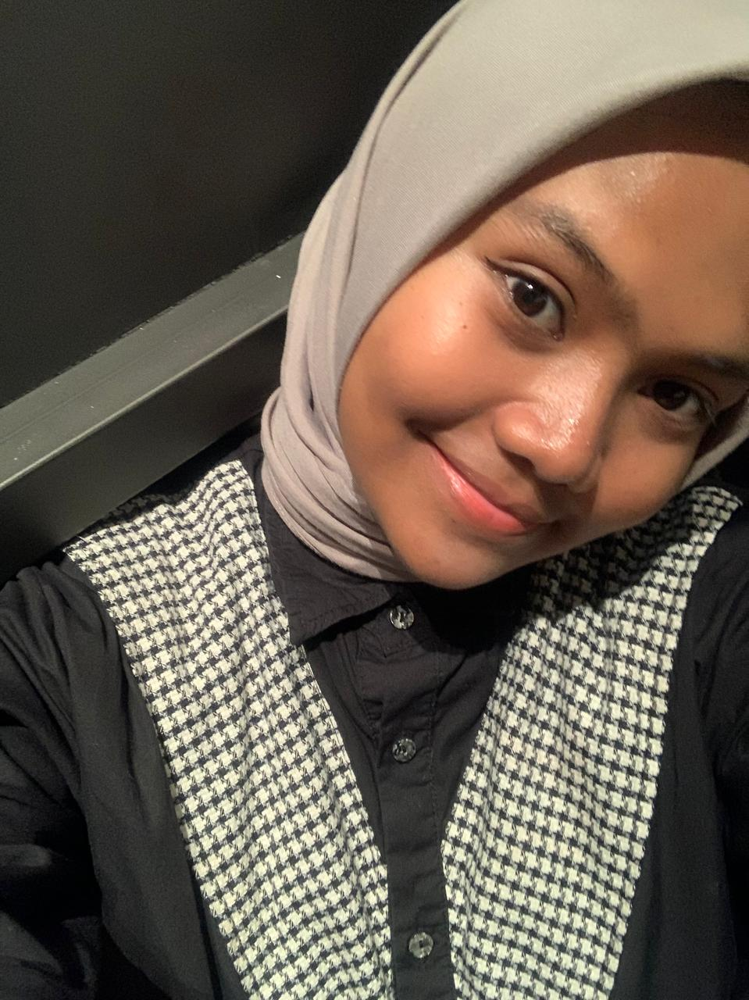

MY BIODATA

Nama : Nayla Zahra Adelia
TTL : Pare-Pare, 09 Februari 2006
E-mail : zahranayla323@gmail.com
Hobi :
- Menonton Film
- Mendengarkan Musik
Makanan Favorit :
- Bakmi ayam
- Kwetiau
- Nasi Goreng
- Pempek
- Puding
Lagu Favorit :
Untuk lagu fav saya yang lain, bisa Tap here